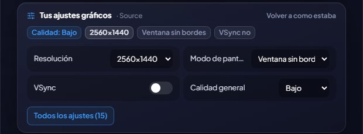

Змінюйте графічні налаштування кожної гри
Якість, роздільна здатність, режим екрана, ліміт FPS, VSync… просто з GameHub, не відкриваючи гру.
GameHub зчитує графічні налаштування, які зберігає кожна гра, і показує їх на її сторінці. В іграх, що зберігають налаштування у відомому форматі, їх можна й змінювати: головні (загальна якість, роздільна здатність, режим екрана, ліміт FPS і VSync) — одразу на сторінці, а «Усі налаштування» відкриває вікно з усіма ними, згрупованими й з полем пошуку.
Він розуміє ігри на Unreal Engine (Borderlands 3 і 4, Hogwarts Legacy, THE FINALS…), Unreal Engine 3 (Rocket League, Killing Floor 2…), Unity і Source (Counter-Strike 2…), а також GTA V (Legacy та Enhanced), Cyberpunk 2077 і Far Cry з 2 по 6.
Перед першою зміною він зберігає копію того, як усе було: кнопкою «Відновити оригінал» ви повернете все як було. Поки гра запущена, змінювати щось не дозволяє (гра перезапише це під час виходу) і поважає файли лише для читання.
Параметри запуску: зберігайте власні для кожної гри (наприклад -dx11 чи -novid), вмикайте й вимикайте кожен одним кліком і змінюйте їхній порядок. Вони додаються, коли ви відкриваєте гру з GameHub (у Steam — разом із тими, що ви вже там задали); у будь-якій грі, навіть якщо GameHub не може прочитати її налаштувань. Epic, Ubisoft і EA не дозволяють їх передавати: він вас про це попередить. Також для кожної гри можна задати власні пріоритет та афінність (які ядра CPU вона використовує), що діють, поки гра запущена.
Також The Witcher 3 і Back 4 Blood, а в Cyberpunk 2077 можна вибрати, на якому екрані грати.
Налаштування мають власну вкладку на сторінці гри: угорі — налаштування екрана, нижче — якість і ефекти, скільки вмістилося, а «Усі налаштування» завжди поруч.
Як користуватися
- На сторінці гри — вкладка «Графічні налаштування».
- Змініть що завгодно й натисніть «Зберегти»: ви відчуєте це під час наступного запуску гри.

Спробуєте?
⬇ Пряме завантаження 🛍️ Завантажити з Microsoft StoreWindows 10 і 11 (64-бітні) · Безкоштовно · Оновлюється сам